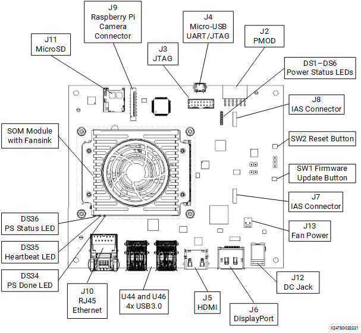

Kria™ Booting Kria Starter Kit Linux |
Booting Kria Starter Kit Linux¶
Introduction¶
This document shows how to boot Kria Starter Kit Linux and perform common one-time updates and installations required prior to running any Xilinx released KV260 application in Linux.
This guide is targeted for Ubuntu 22.04 and Xilinx 2022.1 toolchain.
Boot Process¶
Flash the Kria Starter Kit Linux image into the SD Card (minimum 16GB)
Refer to KV260 Getting Started Page to flash SD card with a Ubuntu 22.04 image.
You can re-use the same SD card to evaluate all the applications released for Ubuntu 22.04.
Set up the hardware. Each application will require a different set of peripherals, below lists the minimum required to boot Linux.

microSD:
Insert the SD card into slot at J11.
Monitor:
Connect the monitor to the board via either DP or HDMI port. Refer to each application documentation for monitor resolution requirement.
UART/JTAG interface:
For interacting and seeing boot-time information, connect a USB debugger to J4. Some applications will only run through commands issued through UART interface.
Network connection:
Connect the Ethernet cable to your local network with DHCP enabled to install Linux packages and run Jupyter Notebooks
Ensure the Starter Kit Boot firmware is up to date
The SOM Starter Kits have factory pre-programmed boot firmware that is installed and maintained in the SOM QSPI device. Update the boot firmware in the SOM QSPI device to ‘2022.1 Boot FW’ Image.
See the Kria Wiki to obtain boot firmware binary and instructions to update QSPI image using xmutil, after Linux boot.
QSPI image update persists through power cycles or SD card changes.
Boot Linux on your Starter Kit (Ubuntu) following the instruction from this page
For some applications it is required to work with commandline instead of GNOME Desktop.
If not done so yet, perform system update to pull in the latest kernel and Xilinx packages. There are two ways to do this.
Through snap install, for more information refer to the Xilinx config snap Wiki:
sudo snap install xlnx-config --classic --channel=2.x
After xlnx-config snap has been installed, run the Xilinx platform setup script, and follow the prompts.
sudo xlnx-config.sysinit
Alternatively, the above can be achieved by manually adding the Xilinx specific Ubuntu PPAs, and then performing a system update and upgrade to pull in the latest Xilinx libraries. Note the apt upgrade step may take some time.
sudo add-apt-repository ppa:xilinx-apps sudo add-apt-repository ppa:ubuntu-xilinx/sdk sudo apt update sudo apt upgrade
Note: if the kernel was updated, make sure to follow the apt upgrade command prompt to reboot the platform in order to boot with latest kernel.
KV260 Ubuntu 22.04 applications are deployed as Docker containers. Follow instructions from docker.com to install Docker.
Enable your user to properly use the Docker commands without using sudo for every docker command.
sudo groupadd docker sudo usermod -a -G docker $USERThis will only need to be done once if re-using the same SD card for running multiple applications.
Install the latest xrt zocl driver:
sudo apt install xrt-dkms
This flow will only need to be done once if re-using the same SD card for multiple applications. However, user can choose to update and upgrade again to install newly available updates thats made available later.
License¶
Licensed under the Apache License, Version 2.0 (the “License”); you may not use this file except in compliance with the License.
You may obtain a copy of the License at http://www.apache.org/licenses/LICENSE-2.0
Unless required by applicable law or agreed to in writing, software distributed under the License is distributed on an “AS IS” BASIS, WITHOUT WARRANTIES OR CONDITIONS OF ANY KIND, either express or implied. See the License for the specific language governing permissions and limitations under the License.
Copyright© 2021 Xilinx